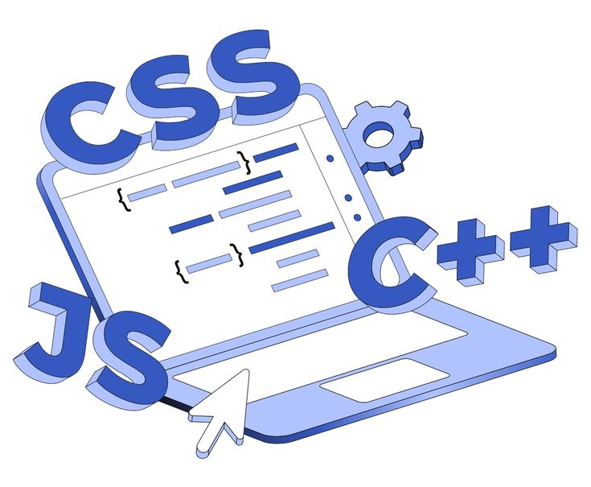
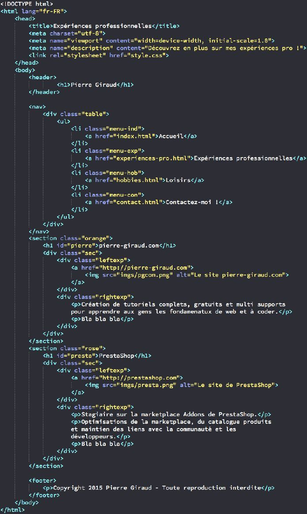
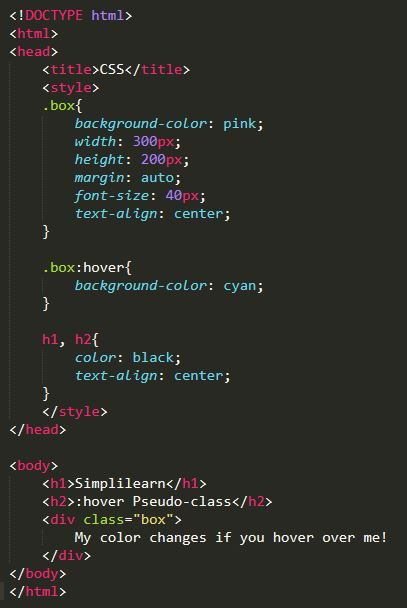
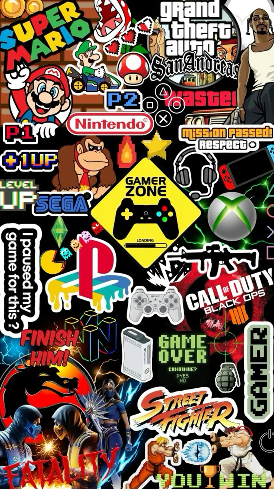
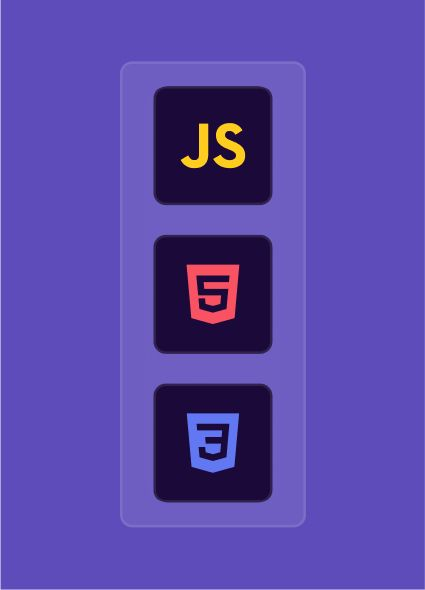
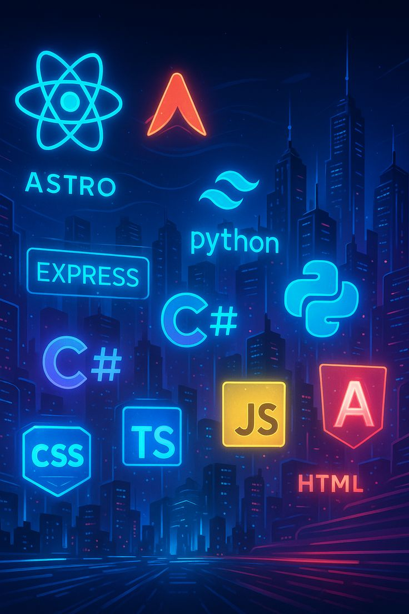

Meu Mundo hoje
Começar na programação é como entrar em um universo novo. No primeiro período, tudo parece desafiador: códigos estranhos, erros que aparecem do nada e aquela sensação de que cada linha digitada pode mudar tudo. Mas, ao mesmo tempo, é exatamente isso que torna a experiência tão interessante.
Entre aulas, pesquisas e muitas tentativas, o aprendizado vai além das linguagens de programação. Aprendemos a pensar de forma lógica, resolver problemas e ter paciência para entender que errar faz parte do processo. Cada pequeno projeto concluído traz a sensação de evolução e mostra que, pouco a pouco, estamos construindo algo maior.
O primeiro período não forma apenas programadores. Ele cria pessoas mais curiosas, criativas e preparadas para enfrentar desafios, dentro e fora da tecnologia.





